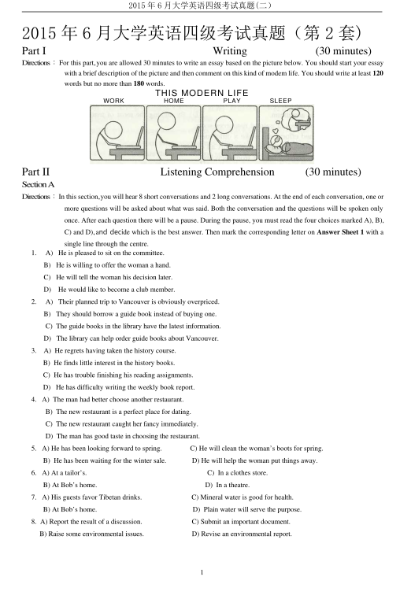
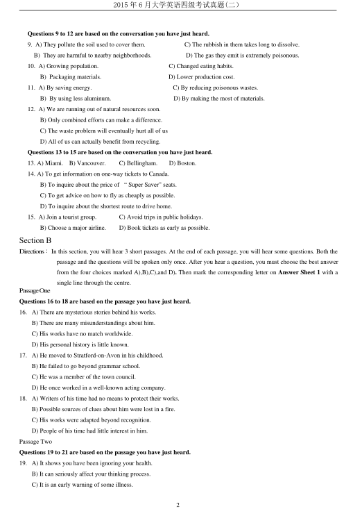
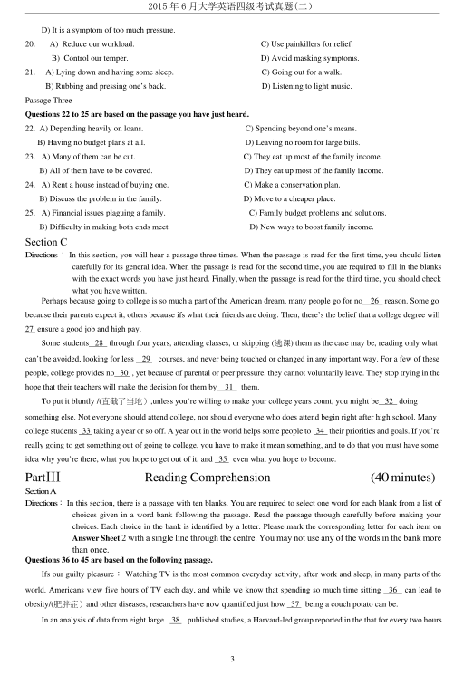
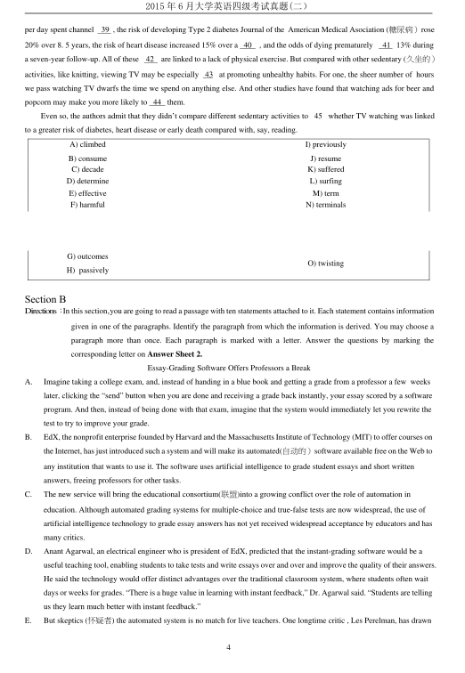
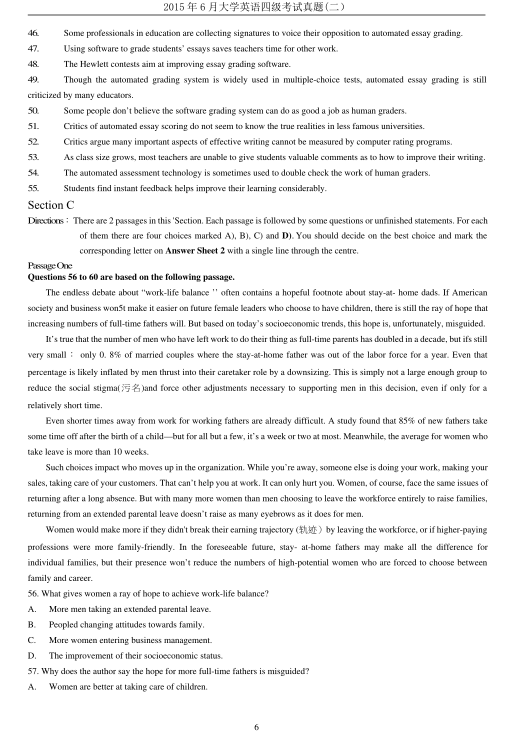
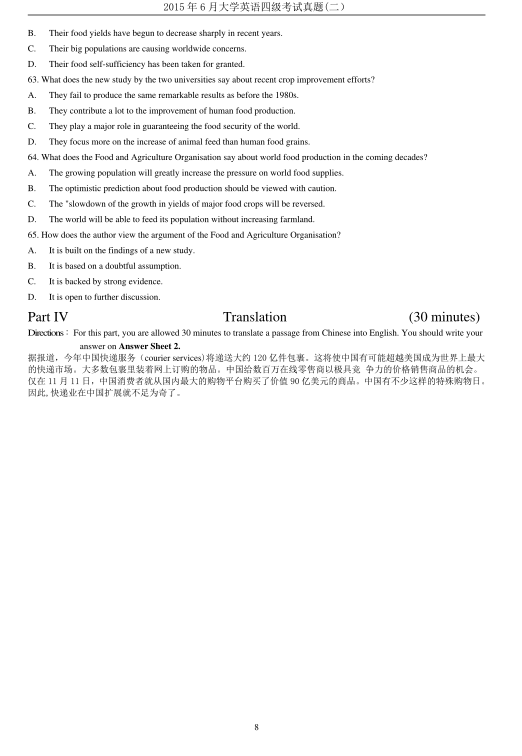

第 1 / 8 页

2015 年6 月大学英语四级考试真题(二）
1
2015 年6 月大学英语四级考试真题（第2 套)
Part I
Writing
(30 minutes)
Directions：For this part,you are allowed 30 minutes to write an essay based on the picture below. You should start your essay
with a brief description of the picture and then comment on this kind of modem life. You should write at least 120
words but no more than 180 words.
THIS MODERN LIFE
Part II
Listening Comprehension
(30 minutes)
SectionA
Directions：In this section,you will hear 8 short conversations and 2 long conversations. At the end of each conversation, one or
more questions will be asked about what was said. Both the conversation and the questions will be spoken only
once. After each question there will be a pause. During the pause, you must read the four choices marked A), B),
C) and D),and decide which is the best answer. Then mark the corresponding letter on Answer Sheet 1 with a
single line through the centre.
1.
A) He is pleased to sit on the committee.
B) He is willing to offer the woman a hand.
C) He will tell the woman his decision later.
D)
He would like to become a club member.
2.
A) Their planned trip to Vancouver is obviously overpriced.
B) They should borrow a guide book instead of buying one.
C) The guide books in the library have the latest information.
D) The library can help order guide books about Vancouver.
3.
A) He regrets having taken the history course.
B) He finds little interest in the history books.
C) He has trouble finishing his reading assignments.
D) He has difficulty writing the weekly book report.
4. A) The man had better choose another restaurant.
B) The new restaurant is a perfect place for dating.
C) The new restaurant caught her fancy immediately.
D) The man has good taste in choosing the restaurant.
5. A) He has been looking forward to spring.
C) He will clean the woman’s boots for spring.
B) He has been waiting for the winter sale.
D) He will help the woman put things away.
6. A) At a tailor’s.
C) In a clothes store.
B) At Bob’s home.
D) In a theatre.
7. A) His guests favor Tibetan drinks.
C) Mineral water is good for health.
B) At Bob’s home.
D) Plain water will serve the purpose.
8. A) Report the result of a discussion.
C) Submit an important document.
B) Raise some environmental issues.
D) Revise an environmental report.
WORK
HOME
PLAY
SLEEP
查看 / 复制本页文字
2015 年6 月大学英语四级考试真题(二） 1 2015 年6 月大学英语四级考试真题（第2 套) Part I Writing (30 minutes) Directions：For this part,you are allowed 30 minutes to write an essay based on the picture below. You should start your essay with a brief description of the picture and then comment on this kind of modem life. You should write at least 120 words but no more than 180 words. THIS MODERN LIFE Part II Listening Comprehension (30 minutes) SectionA Directions：In this section,you will hear 8 short conversations and 2 long conversations. At the end of each conversation, one or more questions will be asked about what was said. Both the conversation and the questions will be spoken only once. After each question there will be a pause. During the pause, you must read the four choices marked A), B), C) and D),and decide which is the best answer. Then mark the corresponding letter on Answer Sheet 1 with a single line through the centre. 1. A) He is pleased to sit on the committee. B) He is willing to offer the woman a hand. C) He will tell the woman his decision later. D) He would like to become a club member. 2. A) Their planned trip to Vancouver is obviously overpriced. B) They should borrow a guide book instead of buying one. C) The guide books in the library have the latest information. D) The library can help order guide books about Vancouver. 3. A) He regrets having taken the history course. B) He finds little interest in the history books. C) He has trouble finishing his reading assignments. D) He has difficulty writing the weekly book report. 4. A) The man had better choose another restaurant. B) The new restaurant is a perfect place for dating. C) The new restaurant caught her fancy immediately. D) The man has good taste in choosing the restaurant. 5. A) He has been looking forward to spring. C) He will clean the woman’s boots for spring. B) He has been waiting for the winter sale. D) He will help the woman put things away. 6. A) At a tailor’s. C) In a clothes store. B) At Bob’s home. D) In a theatre. 7. A) His guests favor Tibetan drinks. C) Mineral water is good for health. B) At Bob’s home. D) Plain water will serve the purpose. 8. A) Report the result of a discussion. C) Submit an important document. B) Raise some environmental issues. D) Revise an environmental report. WORK HOME PLAY SLEEP
第 2 / 8 页

2015 年6 月大学英语四级考试真题(二）
2
Questions 9 to 12 are based on the conversation you have just heard.
9. A) They pollute the soil used to cover them.
C) The rubbish in them takes long to dissolve.
B) They are harmful to nearby neighborhoods.
D) The gas they emit is extremely poisonous.
10. A) Growing population.
C) Changed eating habits.
B) Packaging materials.
D) Lower production cost.
11. A) By saving energy.
C) By reducing poisonous wastes.
B) By using less aluminum.
D) By making the most of materials.
12. A) We are running out of natural resources soon.
B) Only combined efforts can make a difference.
C) The waste problem will eventually hurt all of us
D) All of us can actually benefit from recycling.
Questions 13 to 15 are based on the conversation you have just heard.
13. A) Miami.
B) Vancouver.
C) Bellingham.
D) Boston.
14. A) To get information on one-way tickets to Canada.
B) To inquire about the price of “ Super Saver” seats.
C) To get advice on how to fly as cheaply as possible.
D) To inquire about the shortest route to drive home.
15. A) Join a tourist group.
C) Avoid trips in public holidays.
B) Choose a major airline.
D) Book tickets as early as possible.
Section B
Directions：In this section, you will hear 3 short passages. At the end of each passage, you will hear some questions. Both the
passage and the questions will be spoken only once. After you hear a question, you must choose the best answer
from the four choices marked A),B),C),and D). Then mark the corresponding letter on Answer Sheet 1 with a
single line through the centre.
PassageOne
Questions 16 to 18 are based on the passage you have just heard.
16. A) There are mysterious stories behind his works.
B) There are many misunderstandings about him.
C) His works have no match worldwide.
D) His personal history is little known.
17. A) He moved to Stratford-on-Avon in his childhood.
B) He failed to go beyond grammar school.
C) He was a member of the town council.
D) He once worked in a well-known acting company.
18. A) Writers of his time had no means to protect their works.
B) Possible sources of clues about him were lost in a fire.
C) His works were adapted beyond recognition.
D) People of his time had little interest in him.
Passage Two
Questions 19 to 21 are based on the passage you have just heard.
19. A) It shows you have been ignoring your health.
B) It can seriously affect your thinking process.
C) It is an early warning of some illness.
查看 / 复制本页文字
2015 年6 月大学英语四级考试真题(二） 2 Questions 9 to 12 are based on the conversation you have just heard. 9. A) They pollute the soil used to cover them. C) The rubbish in them takes long to dissolve. B) They are harmful to nearby neighborhoods. D) The gas they emit is extremely poisonous. 10. A) Growing population. C) Changed eating habits. B) Packaging materials. D) Lower production cost. 11. A) By saving energy. C) By reducing poisonous wastes. B) By using less aluminum. D) By making the most of materials. 12. A) We are running out of natural resources soon. B) Only combined efforts can make a difference. C) The waste problem will eventually hurt all of us D) All of us can actually benefit from recycling. Questions 13 to 15 are based on the conversation you have just heard. 13. A) Miami. B) Vancouver. C) Bellingham. D) Boston. 14. A) To get information on one-way tickets to Canada. B) To inquire about the price of “ Super Saver” seats. C) To get advice on how to fly as cheaply as possible. D) To inquire about the shortest route to drive home. 15. A) Join a tourist group. C) Avoid trips in public holidays. B) Choose a major airline. D) Book tickets as early as possible. Section B Directions：In this section, you will hear 3 short passages. At the end of each passage, you will hear some questions. Both the passage and the questions will be spoken only once. After you hear a question, you must choose the best answer from the four choices marked A),B),C),and D). Then mark the corresponding letter on Answer Sheet 1 with a single line through the centre. PassageOne Questions 16 to 18 are based on the passage you have just heard. 16. A) There are mysterious stories behind his works. B) There are many misunderstandings about him. C) His works have no match worldwide. D) His personal history is little known. 17. A) He moved to Stratford-on-Avon in his childhood. B) He failed to go beyond grammar school. C) He was a member of the town council. D) He once worked in a well-known acting company. 18. A) Writers of his time had no means to protect their works. B) Possible sources of clues about him were lost in a fire. C) His works were adapted beyond recognition. D) People of his time had little interest in him. Passage Two Questions 19 to 21 are based on the passage you have just heard. 19. A) It shows you have been ignoring your health. B) It can seriously affect your thinking process. C) It is an early warning of some illness.
第 3 / 8 页

2015 年6 月大学英语四级考试真题(二）
3
D) It is a symptom of too much pressure.
20.
A) Reduce our workload.
C) Use painkillers for relief.
B) Control our temper.
D) Avoid masking symptoms.
21.
A) Lying down and having some sleep.
C) Going out for a walk.
B) Rubbing and pressing one’s back.
D) Listening to light music.
Passage Three
Questions 22 to 25 are based on the passage you have just heard.
22. A) Depending heavily on loans.
C) Spending beyond one’s means.
B) Having no budget plans at all.
D) Leaving no room for large bills.
23. A) Many of them can be cut.
C) They eat up most of the family income.
B) All of them have to be covered.
D) They eat up most of the family income.
24. A) Rent a house instead of buying one.
C) Make a conservation plan.
B) Discuss the problem in the family.
D) Move to a cheaper place.
25. A) Financial issues plaguing a family.
C) Family budget problems and solutions.
B) Difficulty in making both ends meet.
D) New ways to boost family income.
Section C
Directions：In this section, you will hear a passage three times. When the passage is read for the first time,you should listen
carefully for its general idea. When the passage is read for the second time,you are required to fill in the blanks
with the exact words you have just heard. Finally,when the passage is read for the third time, you should check
what you have written.
Perhaps because going to college is so much a part of the American dream, many people go for no
26 reason. Some go
because their parents expect it, others because ifs what their friends are doing. Then, there’s the belief that a college degree will
27 ensure a good job and high pay.
Some students 28 through four years, attending classes, or skipping (逃课) them as the case may be, reading only what
can’t be avoided, looking for less
29
courses, and never being touched or changed in any important way. For a few of these
people, college provides no 30 , yet because of parental or peer pressure, they cannot voluntarily leave. They stop trying in the
hope that their teachers will make the decision for them by
31
them.
To put it bluntly /(直截了当地）,unless you’re willing to make your college years count, you might be 32 doing
something else. Not everyone should attend college, nor should everyone who does attend begin right after high school. Many
college students 33 taking a year or so off. A year out in the world helps some people to 34 their priorities and goals. If you’re
really going to get something out of going to college, you have to make it mean something, and to do that you must have some
idea why you’re there, what you hope to get out of it, and 35 even what you hope to become.
PartⅢ
Reading Comprehension
(40minutes)
SectionA
Directions：In this section, there is a passage with ten blanks. You are required to select one word for each blank from a list of
choices given in a word bank following the passage. Read the passage through carefully before making your
choices. Each choice in the bank is identified by a letter. Please mark the corresponding letter for each item on
Answer Sheet2withasinglelinethroughthecentre.Youmaynotuseanyofthewordsinthebankmore
than once.
Questions 36 to 45 are based on the following passage.
Ifs our guilty pleasure：Watching TV is the most common everyday activity, after work and sleep, in many parts of the
world. Americans view five hours of TV each day, and while we know that spending so much time sitting
36
can lead to
obesity/(肥胖症）and other diseases, researchers have now quantified just how 37 being a couch potato can be.
In an analysis of data from eight large
38 .published studies, a Harvard-led group reported in the that for every two hours
查看 / 复制本页文字
2015 年6 月大学英语四级考试真题(二） 3 D) It is a symptom of too much pressure. 20. A) Reduce our workload. C) Use painkillers for relief. B) Control our temper. D) Avoid masking symptoms. 21. A) Lying down and having some sleep. C) Going out for a walk. B) Rubbing and pressing one’s back. D) Listening to light music. Passage Three Questions 22 to 25 are based on the passage you have just heard. 22. A) Depending heavily on loans. C) Spending beyond one’s means. B) Having no budget plans at all. D) Leaving no room for large bills. 23. A) Many of them can be cut. C) They eat up most of the family income. B) All of them have to be covered. D) They eat up most of the family income. 24. A) Rent a house instead of buying one. C) Make a conservation plan. B) Discuss the problem in the family. D) Move to a cheaper place. 25. A) Financial issues plaguing a family. C) Family budget problems and solutions. B) Difficulty in making both ends meet. D) New ways to boost family income. Section C Directions：In this section, you will hear a passage three times. When the passage is read for the first time,you should listen carefully for its general idea. When the passage is read for the second time,you are required to fill in the blanks with the exact words you have just heard. Finally,when the passage is read for the third time, you should check what you have written. Perhaps because going to college is so much a part of the American dream, many people go for no 26 reason. Some go because their parents expect it, others because ifs what their friends are doing. Then, there’s the belief that a college degree will 27 ensure a good job and high pay. Some students 28 through four years, attending classes, or skipping (逃课) them as the case may be, reading only what can’t be avoided, looking for less 29 courses, and never being touched or changed in any important way. For a few of these people, college provides no 30 , yet because of parental or peer pressure, they cannot voluntarily leave. They stop trying in the hope that their teachers will make the decision for them by 31 them. To put it bluntly /(直截了当地）,unless you’re willing to make your college years count, you might be 32 doing something else. Not everyone should attend college, nor should everyone who does attend begin right after high school. Many college students 33 taking a year or so off. A year out in the world helps some people to 34 their priorities and goals. If you’re really going to get something out of going to college, you have to make it mean something, and to do that you must have some idea why you’re there, what you hope to get out of it, and 35 even what you hope to become. PartⅢ Reading Comprehension (40minutes) SectionA Directions：In this section, there is a passage with ten blanks. You are required to select one word for each blank from a list of choices given in a word bank following the passage. Read the passage through carefully before making your choices. Each choice in the bank is identified by a letter. Please mark the corresponding letter for each item on Answer Sheet2withasinglelinethroughthecentre.Youmaynotuseanyofthewordsinthebankmore than once. Questions 36 to 45 are based on the following passage. Ifs our guilty pleasure：Watching TV is the most common everyday activity, after work and sleep, in many parts of the world. Americans view five hours of TV each day, and while we know that spending so much time sitting 36 can lead to obesity/(肥胖症）and other diseases, researchers have now quantified just how 37 being a couch potato can be. In an analysis of data from eight large 38 .published studies, a Harvard-led group reported in the that for every two hours
第 4 / 8 页

2015 年6 月大学英语四级考试真题(二）
4
per day spent channel
39 , the risk of developing Type 2 diabetes Journal of the American Medical Asociation (糖尿病）rose
20% over 8. 5 years, the risk of heart disease increased 15% over a 40
, and the odds of dying prematurely
41 13% during
a seven-year follow-up. All of these
42
are linked to a lack of physical exercise. But compared with other sedentary (久坐的）
activities, like knitting, viewing TV may be especially 43 at promoting unhealthy habits. For one, the sheer number of hours
we pass watching TV dwarfs the time we spend on anything else. And other studies have found that watching ads for beer and
popcorn may make you more likely to 44 them.
Even so, the authors admit that they didn’t compare different sedentary activities to 45 whether TV watching was linked
to a greater risk of diabetes, heart disease or early death compared with, say, reading.
A) climbed
I) previously
B) consume
J) resume
C) decade
K) suffered
D) determine
L) surfing
E) effective
M) term
F) harmful
N) terminals
G) outcomes
H) passively
O) twisting
Section B
Directions：In this section,you are going to read a passage with ten statements attached to it. Each statement contains information
given in one of the paragraphs. Identify the paragraph from which the information is derived. You may choose a
paragraph more than once. Each paragraph is marked with a letter. Answer the questions by marking the
corresponding letter on Answer Sheet 2.
Essay-Grading Software Offers Professors a Break
A.
Imagine taking a college exam, and, instead of handing in a blue book and getting a grade from a professor a few weeks
later, clicking the “send” button when you are done and receiving a grade back instantly, your essay scored by a software
program. And then, instead of being done with that exam, imagine that the system would immediately let you rewrite the
test to try to improve your grade.
B.
EdX, the nonprofit enterprise founded by Harvard and the Massachusetts Institute of Technology (MIT) to offer courses on
the Internet, has just introduced such a system and will make its automated(自的）software available free on the Web to
any institution that wants to use it. The software uses artificial intelligence to grade student essays and short written
answers, freeing professors for other tasks.
C.
The new service will bring the educational consortium(盟)into a growing conflict over the role of automation in
education. Although automated grading systems for multiple-choice and true-false tests are now widespread, the use of
artificial intelligence technology to grade essay answers has not yet received widespread acceptance by educators and has
many critics.
D.
Anant Agarwal, an electrical engineer who is president of EdX, predicted that the instant-grading software would be a
useful teaching tool, enabling students to take tests and write essays over and over and improve the quality of their answers.
He said the technology would offer distinct advantages over the traditional classroom system, where students often wait
days or weeks for grades. “There is a huge value in learning with instant feedback,” Dr. Agarwal said. “Students are telling
us they learn much better with instant feedback.”
E.
But skeptics (怀疑者) the automated system is no match for live teachers. One longtime critic , Les Perelman, has drawn
查看 / 复制本页文字
2015 年6 月大学英语四级考试真题(二） 4 per day spent channel 39 , the risk of developing Type 2 diabetes Journal of the American Medical Asociation (糖尿病）rose 20% over 8. 5 years, the risk of heart disease increased 15% over a 40 , and the odds of dying prematurely 41 13% during a seven-year follow-up. All of these 42 are linked to a lack of physical exercise. But compared with other sedentary (久坐的） activities, like knitting, viewing TV may be especially 43 at promoting unhealthy habits. For one, the sheer number of hours we pass watching TV dwarfs the time we spend on anything else. And other studies have found that watching ads for beer and popcorn may make you more likely to 44 them. Even so, the authors admit that they didn’t compare different sedentary activities to 45 whether TV watching was linked to a greater risk of diabetes, heart disease or early death compared with, say, reading. A) climbed I) previously B) consume J) resume C) decade K) suffered D) determine L) surfing E) effective M) term F) harmful N) terminals G) outcomes H) passively O) twisting Section B Directions：In this section,you are going to read a passage with ten statements attached to it. Each statement contains information given in one of the paragraphs. Identify the paragraph from which the information is derived. You may choose a paragraph more than once. Each paragraph is marked with a letter. Answer the questions by marking the corresponding letter on Answer Sheet 2. Essay-Grading Software Offers Professors a Break A. Imagine taking a college exam, and, instead of handing in a blue book and getting a grade from a professor a few weeks later, clicking the “send” button when you are done and receiving a grade back instantly, your essay scored by a software program. And then, instead of being done with that exam, imagine that the system would immediately let you rewrite the test to try to improve your grade. B. EdX, the nonprofit enterprise founded by Harvard and the Massachusetts Institute of Technology (MIT) to offer courses on the Internet, has just introduced such a system and will make its automated(自的）software available free on the Web to any institution that wants to use it. The software uses artificial intelligence to grade student essays and short written answers, freeing professors for other tasks. C. The new service will bring the educational consortium(盟)into a growing conflict over the role of automation in education. Although automated grading systems for multiple-choice and true-false tests are now widespread, the use of artificial intelligence technology to grade essay answers has not yet received widespread acceptance by educators and has many critics. D. Anant Agarwal, an electrical engineer who is president of EdX, predicted that the instant-grading software would be a useful teaching tool, enabling students to take tests and write essays over and over and improve the quality of their answers. He said the technology would offer distinct advantages over the traditional classroom system, where students often wait days or weeks for grades. “There is a huge value in learning with instant feedback,” Dr. Agarwal said. “Students are telling us they learn much better with instant feedback.” E. But skeptics (怀疑者) the automated system is no match for live teachers. One longtime critic , Les Perelman, has drawn
第 5 / 8 页
2015 年6 月大学英语四级考试真题(二）
5
national attention several times for putting together nonsense essays that have fooled software grading programs into
giving high marks. He has also been highly critical of studies claiming that the software compares well to human graders.
F.
He is among a group of educators who last month began circulating a petition (呼吁) opposing automated assessment
software. The group, which calls itself Professionals Against Machine Scoring of Student Essays in High-Stakes
Assessment, has collected nearly 2,000 signatures, including some from famous people like Noam Chomsky.
G.
“Let’s face the realities of automatic essay scoring,” the group’s statement reads in part. “Computers cannot ‘read’. They
cannot measure the essentials of effective written communication: accuracy, reasoning, adequacy of evidence, good sense,
ethical ( 伦理的) position, convincing argument, meaningful organization, and clarity, among others.
H.
But EdX expects its software to be adopted widely by schools and universities. It offers free online classes from Harvard,
MIT and the University of California-Berkeley; this fall, it will add classes from Wellesley, Georgetown and the
University of Texas. In all, 12 universities participate in EdX, which offers certificates for course completion and has said
that it plans to continue to expand next year, including adding international schools.
I.
The EdX assessment tool requires human teachers, or graders, to first grade 100 essays or essay questions. The system then
uses a variety of machine-learning techniques to train itself to be able to grade any number of essays or answers
automatically and almost instantly. The software will assign a grade depending on the scoring system created by the
teacher, whether it is a letter grade or numerical（数字的）rank.
J.
EdX is not the first to use the automated assessment technology, which dates to early computers in the 1960s. There is now
a range of companies offering commercial programs to grade written test answers, and four states—Louisiana, North
Dakota, Utah and West Virginia—are using some form of the technology in secondary schools. A fifth, Indiana, has
experimented with it. In some cases the software is used as a “second reader,” to check the reliability of the human graders.
K.
But the growing influence of the EdX consortium to set standards is likely to give the technology a boost. On Tuesday,
Stanford announced that it would work with EdX to develop a joint educational system that will make use of the automated
assessment technology.
L.
Two start-ups, Coursera and Udacity, recently founded by Stanford faculty members to create “massive open online
courses,” or MOOCs, are also committed to automated assessment systems because of the value of instant feedback. “It
allows students to get immediate feedback on their work, so that lean turns into a game, with students naturally(吸引)
toward resubmitting the work until they get it right,” said Daphne Roller, a computer scientist and a founder of Coursera.
M.
Last year the Hewlett Foundation, a grant-making organization set up by one of the Hewlett- Packard founders and his wife,
sponsored two $100,000 prizes aimed at improving software that grades essays and short answers. More than 150 teams
entered each category. A winner of one of the Hewlett contests, Vik Paruchuri, was hired by EdX to help design its
assessment software.
N.
“One of our focuses is to help kids learn how to think critically,” said Victor Vuchic, a program officer at the Hewlett
Foundation. “ It’s probably impossible to do that with multiple-choice tests. The challenge is that this requires human
graders, and so they cost a lot more and they take a lot more time. ”
O.
Mark D. Shermis, a professor at the University of Akron in Ohio, supervised the Hewlett Foundation’s contest on
automated essay scoring and wrote a paper about the experiment. In his view, the technology—though imperfect—has a
place in educational settings.
P.
With increasingly large classes, it is impossible for most teachers to give students meaningful feedback on writing
assignments, he said. Plus, he noted, critics of the technology have tended to come from the nation’s best universities,
where the level of teaching is much better than at most schools.
Q.
Often they come from very famous institutions where, in fact, they do a much better job of providing feedback than a
machine ever could,” Dr. Shermis said. “ There seems to be a lack of appreciation of what is actually going on in the real
world.”
查看 / 复制本页文字
2015 年6 月大学英语四级考试真题(二） 5 national attention several times for putting together nonsense essays that have fooled software grading programs into giving high marks. He has also been highly critical of studies claiming that the software compares well to human graders. F. He is among a group of educators who last month began circulating a petition (呼吁) opposing automated assessment software. The group, which calls itself Professionals Against Machine Scoring of Student Essays in High-Stakes Assessment, has collected nearly 2,000 signatures, including some from famous people like Noam Chomsky. G. “Let’s face the realities of automatic essay scoring,” the group’s statement reads in part. “Computers cannot ‘read’. They cannot measure the essentials of effective written communication: accuracy, reasoning, adequacy of evidence, good sense, ethical ( 伦理的) position, convincing argument, meaningful organization, and clarity, among others. H. But EdX expects its software to be adopted widely by schools and universities. It offers free online classes from Harvard, MIT and the University of California-Berkeley; this fall, it will add classes from Wellesley, Georgetown and the University of Texas. In all, 12 universities participate in EdX, which offers certificates for course completion and has said that it plans to continue to expand next year, including adding international schools. I. The EdX assessment tool requires human teachers, or graders, to first grade 100 essays or essay questions. The system then uses a variety of machine-learning techniques to train itself to be able to grade any number of essays or answers automatically and almost instantly. The software will assign a grade depending on the scoring system created by the teacher, whether it is a letter grade or numerical（数字的）rank. J. EdX is not the first to use the automated assessment technology, which dates to early computers in the 1960s. There is now a range of companies offering commercial programs to grade written test answers, and four states—Louisiana, North Dakota, Utah and West Virginia—are using some form of the technology in secondary schools. A fifth, Indiana, has experimented with it. In some cases the software is used as a “second reader,” to check the reliability of the human graders. K. But the growing influence of the EdX consortium to set standards is likely to give the technology a boost. On Tuesday, Stanford announced that it would work with EdX to develop a joint educational system that will make use of the automated assessment technology. L. Two start-ups, Coursera and Udacity, recently founded by Stanford faculty members to create “massive open online courses,” or MOOCs, are also committed to automated assessment systems because of the value of instant feedback. “It allows students to get immediate feedback on their work, so that lean turns into a game, with students naturally(吸引) toward resubmitting the work until they get it right,” said Daphne Roller, a computer scientist and a founder of Coursera. M. Last year the Hewlett Foundation, a grant-making organization set up by one of the Hewlett- Packard founders and his wife, sponsored two $100,000 prizes aimed at improving software that grades essays and short answers. More than 150 teams entered each category. A winner of one of the Hewlett contests, Vik Paruchuri, was hired by EdX to help design its assessment software. N. “One of our focuses is to help kids learn how to think critically,” said Victor Vuchic, a program officer at the Hewlett Foundation. “ It’s probably impossible to do that with multiple-choice tests. The challenge is that this requires human graders, and so they cost a lot more and they take a lot more time. ” O. Mark D. Shermis, a professor at the University of Akron in Ohio, supervised the Hewlett Foundation’s contest on automated essay scoring and wrote a paper about the experiment. In his view, the technology—though imperfect—has a place in educational settings. P. With increasingly large classes, it is impossible for most teachers to give students meaningful feedback on writing assignments, he said. Plus, he noted, critics of the technology have tended to come from the nation’s best universities, where the level of teaching is much better than at most schools. Q. Often they come from very famous institutions where, in fact, they do a much better job of providing feedback than a machine ever could,” Dr. Shermis said. “ There seems to be a lack of appreciation of what is actually going on in the real world.”
第 6 / 8 页

2015 年6 月大学英语四级考试真题(二）
6
46.
Some professionals in education are collecting signatures to voice their opposition to automated essay grading.
47.
Using software to grade students’ essays saves teachers time for other work.
48.
The Hewlett contests aim at improving essay grading software.
49.
Though the automated grading system is widely used in multiple-choice tests, automated essay grading is still
criticized by many educators.
50.
Some people don’t believe the software grading system can do as good a job as human graders.
51.
Critics of automated essay scoring do not seem to know the true realities in less famous universities.
52.
Critics argue many important aspects of effective writing cannot be measured by computer rating programs.
53.
As class size grows, most teachers are unable to give students valuable comments as to how to improve their writing.
54.
The automated assessment technology is sometimes used to double check the work of human graders.
55.
Students find instant feedback helps improve their learning considerably.
Section C
Directions：There are 2 passages in this 'Section. Each passage is followed by some questions or unfinished statements. For each
of them there are four choices marked A), B), C) and D). You should decide on the best choice and mark the
corresponding letter on Answer Sheet 2 with a single line through the centre.
PassageOne
Questions 56 to 60 are based on the following passage.
The endless debate about “work-life balance ’’ often contains a hopeful footnote about stay-at- home dads. If American
society and business won5t make it easier on future female leaders who choose to have children, there is still the ray of hope that
increasing numbers of full-time fathers will. But based on today’s socioeconomic trends, this hope is, unfortunately, misguided.
It’s true that the number of men who have left work to do their thing as full-time parents has doubled in a decade, but ifs still
very small：only 0. 8% of married couples where the stay-at-home father was out of the labor force for a year. Even that
percentage is likely inflated by men thrust into their caretaker role by a downsizing. This is simply not a large enough group to
reduce the social stigma(污名)and force other adjustments necessary to supporting men in this decision, even if only for a
relatively short time.
Even shorter times away from work for working fathers are already difficult. A study found that 85% of new fathers take
some time off after the birth of a child—but for all but a few, it’s a week or two at most. Meanwhile, the average for women who
take leave is more than 10 weeks.
Such choices impact who moves up in the organization. While you’re away, someone else is doing your work, making your
sales, taking care of your customers. That can’t help you at work. It can only hurt you. Women, of course, face the same issues of
returning after a long absence. But with many more women than men choosing to leave the workforce entirely to raise families,
returning from an extended parental leave doesn’t raise as many eyebrows as it does for men.
Women would make more if they didn't break their earning trajectory (轨）by leaving the workforce, or if higher-paying
professions were more family-friendly. In the foreseeable future, stay- at-home fathers may make all the difference for
individual families, but their presence won’t reduce the numbers of high-potential women who are forced to choose between
family and career.
56. What gives women a ray of hope to achieve work-life balance?
A.
More men taking an extended parental leave.
B.
Peopled changing attitudes towards family.
C.
More women entering business management.
D.
The improvement of their socioeconomic status.
57. Why does the author say the hope for more full-time fathers is misguided?
A.
Women are better at taking care of children.
查看 / 复制本页文字
2015 年6 月大学英语四级考试真题(二） 6 46. Some professionals in education are collecting signatures to voice their opposition to automated essay grading. 47. Using software to grade students’ essays saves teachers time for other work. 48. The Hewlett contests aim at improving essay grading software. 49. Though the automated grading system is widely used in multiple-choice tests, automated essay grading is still criticized by many educators. 50. Some people don’t believe the software grading system can do as good a job as human graders. 51. Critics of automated essay scoring do not seem to know the true realities in less famous universities. 52. Critics argue many important aspects of effective writing cannot be measured by computer rating programs. 53. As class size grows, most teachers are unable to give students valuable comments as to how to improve their writing. 54. The automated assessment technology is sometimes used to double check the work of human graders. 55. Students find instant feedback helps improve their learning considerably. Section C Directions：There are 2 passages in this 'Section. Each passage is followed by some questions or unfinished statements. For each of them there are four choices marked A), B), C) and D). You should decide on the best choice and mark the corresponding letter on Answer Sheet 2 with a single line through the centre. PassageOne Questions 56 to 60 are based on the following passage. The endless debate about “work-life balance ’’ often contains a hopeful footnote about stay-at- home dads. If American society and business won5t make it easier on future female leaders who choose to have children, there is still the ray of hope that increasing numbers of full-time fathers will. But based on today’s socioeconomic trends, this hope is, unfortunately, misguided. It’s true that the number of men who have left work to do their thing as full-time parents has doubled in a decade, but ifs still very small：only 0. 8% of married couples where the stay-at-home father was out of the labor force for a year. Even that percentage is likely inflated by men thrust into their caretaker role by a downsizing. This is simply not a large enough group to reduce the social stigma(污名)and force other adjustments necessary to supporting men in this decision, even if only for a relatively short time. Even shorter times away from work for working fathers are already difficult. A study found that 85% of new fathers take some time off after the birth of a child—but for all but a few, it’s a week or two at most. Meanwhile, the average for women who take leave is more than 10 weeks. Such choices impact who moves up in the organization. While you’re away, someone else is doing your work, making your sales, taking care of your customers. That can’t help you at work. It can only hurt you. Women, of course, face the same issues of returning after a long absence. But with many more women than men choosing to leave the workforce entirely to raise families, returning from an extended parental leave doesn’t raise as many eyebrows as it does for men. Women would make more if they didn't break their earning trajectory (轨）by leaving the workforce, or if higher-paying professions were more family-friendly. In the foreseeable future, stay- at-home fathers may make all the difference for individual families, but their presence won’t reduce the numbers of high-potential women who are forced to choose between family and career. 56. What gives women a ray of hope to achieve work-life balance? A. More men taking an extended parental leave. B. Peopled changing attitudes towards family. C. More women entering business management. D. The improvement of their socioeconomic status. 57. Why does the author say the hope for more full-time fathers is misguided? A. Women are better at taking care of children.
第 7 / 8 页
2015 年6 月大学英语四级考试真题(二）
7
B.
Many men value work more than their family.
C.
Their number is too small to make a difference.
D.
Not many men have the chance to stay at home.
58. Why do few men take a long parental leave?
A.
A long leave will have a negative impact on their career.
B.
They just have too many responsibilities to fulfill at work.
C.
The economic loss will be too much for their family to bear.
D.
They are likely to get fired if absent from work for too long.
59. What is the most likely reaction to men returning from an extended parental leave?
A) Jealousy.
C) Admiration.
B) Surprise.
D) Sympathy.
60. What does the author say about high-potential women in the not-too-distant future?
A.
They will benefit from the trend of more fathers staying at home.
B.
They will find high-paying professions a bit more family-friendly.
C.
They are unlikely to break their career trajectory to raise a family.
D.
They will still face the difficult choice between career and children.
Passage Two
Questions 61 to 65 are based on the following passage.
Some of the world’s most significant problems never hit headlines. One example comes from agriculture. Food riots and
hunger make news. But the trend lying behind these matters is rarely talked about. This is the decline in the growth in yields of
some of the world’s major crops. A new study by the University of Minnesota and McGill University in Montreal looks at where,
and how far, this decline is occurring.
The authors take a vast number of data points for the four most important crops :rice, wheat, com and soyabeans (大
豆).They find that on between 24% and 39% of all harvested areas, the improvement in yields that took place before the 1980s
slowed down in the 1990s and 2000s.
There are two worrying features of the slowdown. One is that it has been particularly sharp in the world’s most
(人口
多的）countries, India and China. Their ability to feed themselves has been an important source of relative stability both within
the countries and on world food markets. That self-sufficiency cannot be taken for granted if yields continue to slow down or
reverse.
Second, yield growth has been lower in wheat and rice than in com and soyabeans. This is problematic because wheat and
rice are more important as foods, accounting for around half of all calories consumed. Com and soyabeans are more important as
feed grains. The authors note that “we have preferentially focused our crop improvement efforts on feeding animals and cars
rather than on crops that feed people and are the basis of food security in much of the world. ”,
The report qualifies the more optimistic findings of another new paper which suggests that the world will not have to dig up
a lot more land for farming in order to feed 9 billion people in 2050, as the Food and Agriculture Organisation has argued.
Instead, it says, thanks to slowing population growth, land currently ploughed up for crops might be able to revert (回返）
to forest or wilderness. This could happen. The trouble is that the forecast assumes continued improvements in yields, which
may not actually happen.
61. What does the author try to draw attention to?
A) Food riots and hunger in the world.
C) The decline of the grain yield growth.
B) News headlines in the leading media. D) The food supply in populous countries.
62. Why does the author mention India and China in particular?
A.
Their self-sufficiency is vital to the stability of world food markets.
查看 / 复制本页文字
2015 年6 月大学英语四级考试真题(二） 7 B. Many men value work more than their family. C. Their number is too small to make a difference. D. Not many men have the chance to stay at home. 58. Why do few men take a long parental leave? A. A long leave will have a negative impact on their career. B. They just have too many responsibilities to fulfill at work. C. The economic loss will be too much for their family to bear. D. They are likely to get fired if absent from work for too long. 59. What is the most likely reaction to men returning from an extended parental leave? A) Jealousy. C) Admiration. B) Surprise. D) Sympathy. 60. What does the author say about high-potential women in the not-too-distant future? A. They will benefit from the trend of more fathers staying at home. B. They will find high-paying professions a bit more family-friendly. C. They are unlikely to break their career trajectory to raise a family. D. They will still face the difficult choice between career and children. Passage Two Questions 61 to 65 are based on the following passage. Some of the world’s most significant problems never hit headlines. One example comes from agriculture. Food riots and hunger make news. But the trend lying behind these matters is rarely talked about. This is the decline in the growth in yields of some of the world’s major crops. A new study by the University of Minnesota and McGill University in Montreal looks at where, and how far, this decline is occurring. The authors take a vast number of data points for the four most important crops :rice, wheat, com and soyabeans (大 豆).They find that on between 24% and 39% of all harvested areas, the improvement in yields that took place before the 1980s slowed down in the 1990s and 2000s. There are two worrying features of the slowdown. One is that it has been particularly sharp in the world’s most (人口 多的）countries, India and China. Their ability to feed themselves has been an important source of relative stability both within the countries and on world food markets. That self-sufficiency cannot be taken for granted if yields continue to slow down or reverse. Second, yield growth has been lower in wheat and rice than in com and soyabeans. This is problematic because wheat and rice are more important as foods, accounting for around half of all calories consumed. Com and soyabeans are more important as feed grains. The authors note that “we have preferentially focused our crop improvement efforts on feeding animals and cars rather than on crops that feed people and are the basis of food security in much of the world. ”, The report qualifies the more optimistic findings of another new paper which suggests that the world will not have to dig up a lot more land for farming in order to feed 9 billion people in 2050, as the Food and Agriculture Organisation has argued. Instead, it says, thanks to slowing population growth, land currently ploughed up for crops might be able to revert (回返） to forest or wilderness. This could happen. The trouble is that the forecast assumes continued improvements in yields, which may not actually happen. 61. What does the author try to draw attention to? A) Food riots and hunger in the world. C) The decline of the grain yield growth. B) News headlines in the leading media. D) The food supply in populous countries. 62. Why does the author mention India and China in particular? A. Their self-sufficiency is vital to the stability of world food markets.
第 8 / 8 页

2015 年6 月大学英语四级考试真题(二）
8
B.
Their food yields have begun to decrease sharply in recent years.
C.
Their big populations are causing worldwide concerns.
D.
Their food self-sufficiency has been taken for granted.
63. What does the new study by the two universities say about recent crop improvement efforts?
A.
They fail to produce the same remarkable results as before the 1980s.
B.
They contribute a lot to the improvement of human food production.
C.
They play a major role in guaranteeing the food security of the world.
D.
They focus more on the increase of animal feed than human food grains.
64. What does the Food and Agriculture Organisation say about world food production in the coming decades?
A.
The growing population will greatly increase the pressure on world food supplies.
B.
The optimistic prediction about food production should be viewed with caution.
C.
The "slowdown of the growth in yields of major food crops will be reversed.
D.
The world will be able to feed its population without increasing farmland.
65. How does the author view the argument of the Food and Agriculture Organisation?
A.
It is built on the findings of a new study.
B.
It is based on a doubtful assumption.
C.
It is backed by strong evidence.
D.
It is open to further discussion.
Part IV
Translation
(30 minutes)
Directions：For this part, you are allowed 30 minutes to translate a passage from Chinese into English. You should write your
answer on Answer Sheet 2.
据报道，今年中国快递服务（courier services)将递送大约120 亿件包裹。这将使中国有可能超越美国成为世界上最大
的快递市场。大多数包裹里装着网上订购的物品。中国给数百万在线零售商以极具竞争力的价格销售商品的机会。
仅在11 月11 日，中国消费者就从国内最大的购物平台购买了价值90 亿美元的商品。中国有不少这样的特殊购物日。
因此,快递业在中国扩展就不足为奇了。
查看 / 复制本页文字
2015 年6 月大学英语四级考试真题(二） 8 B. Their food yields have begun to decrease sharply in recent years. C. Their big populations are causing worldwide concerns. D. Their food self-sufficiency has been taken for granted. 63. What does the new study by the two universities say about recent crop improvement efforts? A. They fail to produce the same remarkable results as before the 1980s. B. They contribute a lot to the improvement of human food production. C. They play a major role in guaranteeing the food security of the world. D. They focus more on the increase of animal feed than human food grains. 64. What does the Food and Agriculture Organisation say about world food production in the coming decades? A. The growing population will greatly increase the pressure on world food supplies. B. The optimistic prediction about food production should be viewed with caution. C. The "slowdown of the growth in yields of major food crops will be reversed. D. The world will be able to feed its population without increasing farmland. 65. How does the author view the argument of the Food and Agriculture Organisation? A. It is built on the findings of a new study. B. It is based on a doubtful assumption. C. It is backed by strong evidence. D. It is open to further discussion. Part IV Translation (30 minutes) Directions：For this part, you are allowed 30 minutes to translate a passage from Chinese into English. You should write your answer on Answer Sheet 2. 据报道，今年中国快递服务（courier services)将递送大约120 亿件包裹。这将使中国有可能超越美国成为世界上最大 的快递市场。大多数包裹里装着网上订购的物品。中国给数百万在线零售商以极具竞争力的价格销售商品的机会。 仅在11 月11 日，中国消费者就从国内最大的购物平台购买了价值90 亿美元的商品。中国有不少这样的特殊购物日。 因此,快递业在中国扩展就不足为奇了。